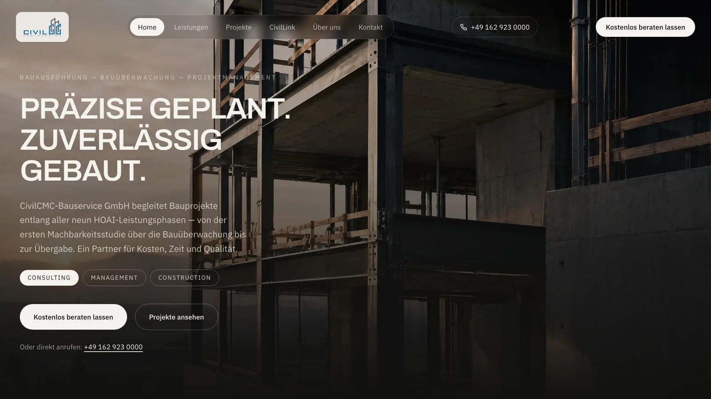
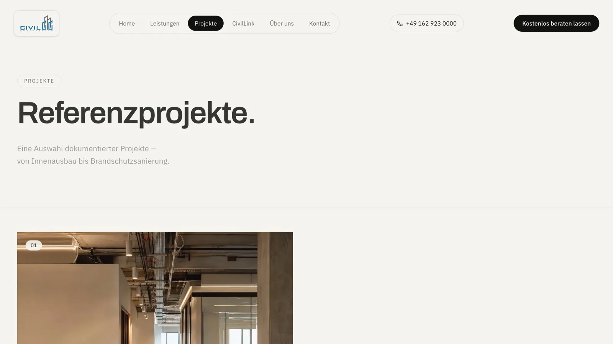
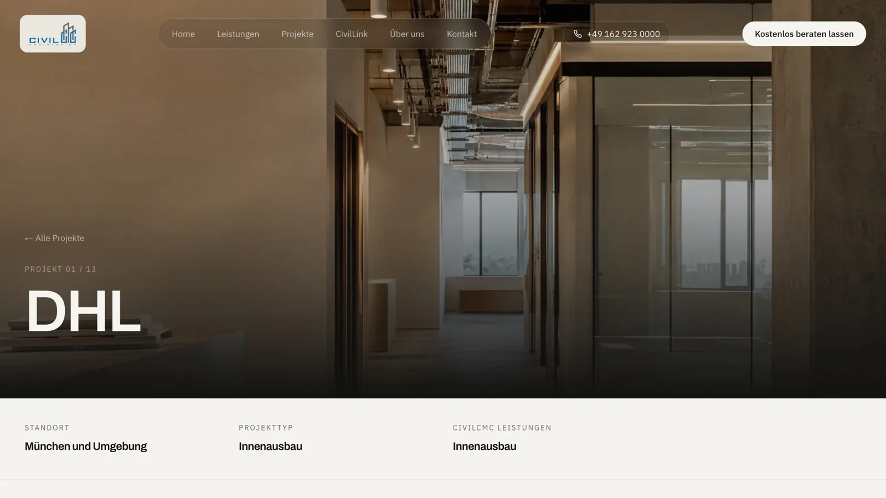
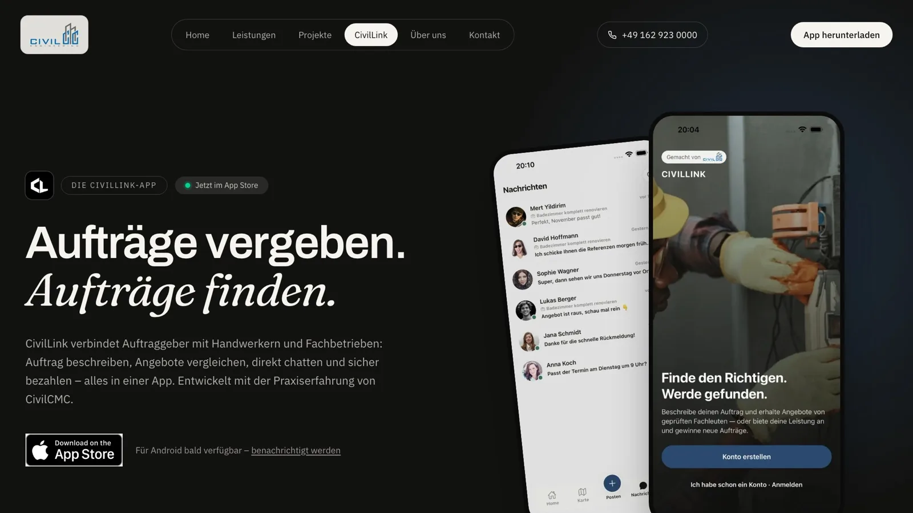

CivilCMC
Für: Ingenieur-, Planungs- und Dienstleistungsbüros
Ausgangslage
Die CivilCMC-Bauservice GmbH aus Grünwald begleitet Bauprojekte von der Planung bis zur Bauüberwachung. Bauherren sollten Leistungen, Referenzen und den richtigen Ansprechpartner sofort finden — auch über Google.
Ergebnis
Eine eigene Website mit Seiten für jede Leistung, 13 Referenzprojekten und einem Rückruf-Formular, das direkt im Postfach ankommt. Dazu lokale Suchmaschinen-Optimierung, die App-Landingpage für CivilLink und private 3D-Rundgänge für Bauherren.




Screenshots der Live-Website civilcmc.com — Auftragsarbeit für die CivilCMC-Bauservice GmbH.
Was tatsächlich funktioniert
Leistungsseiten für Bauausführung, Bauüberwachung, Projektmanagement und Engineering-Consulting
Projekt-Übersicht mit 13 Referenzprojekten, Detailseiten und Referenz-Logos der Kunden
Kontakt- und Rückruf-Formular mit echtem E-Mail-Versand statt mailto-Link
SEO für die lokale Suche: strukturierte Daten, Meta-Tags, Sitemap und robots
CivilLink-Landingpage mit App-Store-Anbindung, Gebühren-Transparenz und FAQ
Datenschutzerklärung für die App und https-Weiterleitung für das Stripe-Connect-Onboarding
Private Rundgang-Seiten: persönlicher Link je Kunde, eingebetteter 3D-Rundgang, nicht indexiert
Impressum, Datenschutz und Kontaktseite mit Google-Maps-Einbindung
Responsives Layout, auf Mobilgeräten geprüft und nachgebessert
Brauchen Sie etwas Ähnliches?
Im kostenlosen Prozess-Check schauen wir, wo Ihr Betrieb Zeit verliert. Sie erhalten schriftlich die 3 größten Zeitfresser und eine Festpreis-Einschätzung.